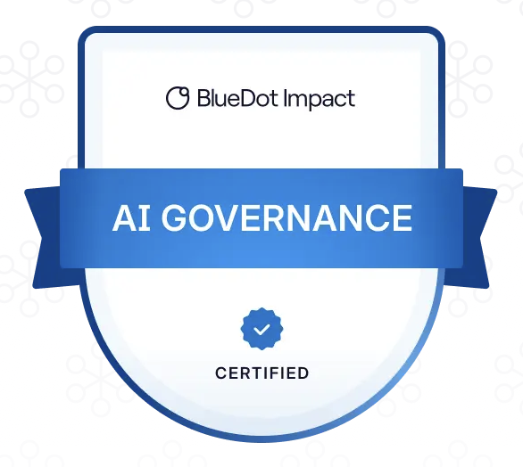

Where twenty years of building operational infrastructure is headed next.
Coursework

What I'm focused on
The understanding deficit
Public grasp of AI governance lags the stakes.
The opacity gap
Capability outpacing safety measurement.
Concentration of power
Among a handful of private developers.
Cognitive enfeeblement
What reliance on AI does to human judgment.
The governance landscape
Mapping the AI Governance Ecosystem
How policy, oversight, and power intersect across labs, safety researchers, evaluators, capital, and watchdogs.
Writing on this
Worth checking out